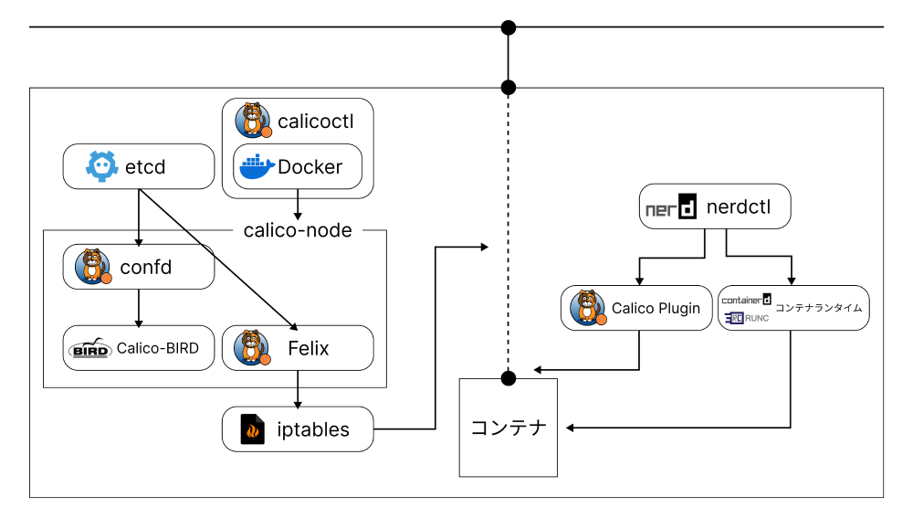

キーワード： Calico / Containerd / Qiita
CNIプラグインであるCalicoをnerdctlから利用する手法を確立し、それをQiitaの記事にする形でアウトプットした。Calicoは、Kubernetesから利用することが多く、それ以外からCalicoを用いたドキュメント等が多くないことから、最小限のCalico動作確認環境を用意することが難しかった。そこで、Calicoプラグインと関連する機能モジュール群をnerdctlを用いて動作させることで、Calicoの動作確認環境とした。
背景
- CalicoはKubernetesから実行することが多く、Kubernetesを利用しないでCalicoを動作させるドキュメント等が多くない
- 研究でCalicoを利用することから、Calicoの動作環境として最小限のものが欲しい
- オープンソースの世界なので、外へのアウトプットをしたい
実装
- Calicoプラグインを動作させるための関連機能モジュール群を列挙
- nerdctl+Calicoプラグインを動作させる環境作成をVagrantとAnsibleで自動化
- Qiitaで記事を作成
頑張った点
- ドキュメントが十分にない中で、試行錯誤を重ねて動作を完成させたこと
- アウトプットを意識し、必要となる情報を学習していったこと
URL
nerdctlでCalicoを動かす（環境構築編）：https://qiita.com/so_ma/items/0666c5999db99ffcc328
nerdctlでCalicoを動かす（実行編）：https://qiita.com/so_ma/items/7493d687a1d215848d83
実行環境 (GitHub)：https://github.com/SoumaSakaguchi/nerdctl-calico-ansible